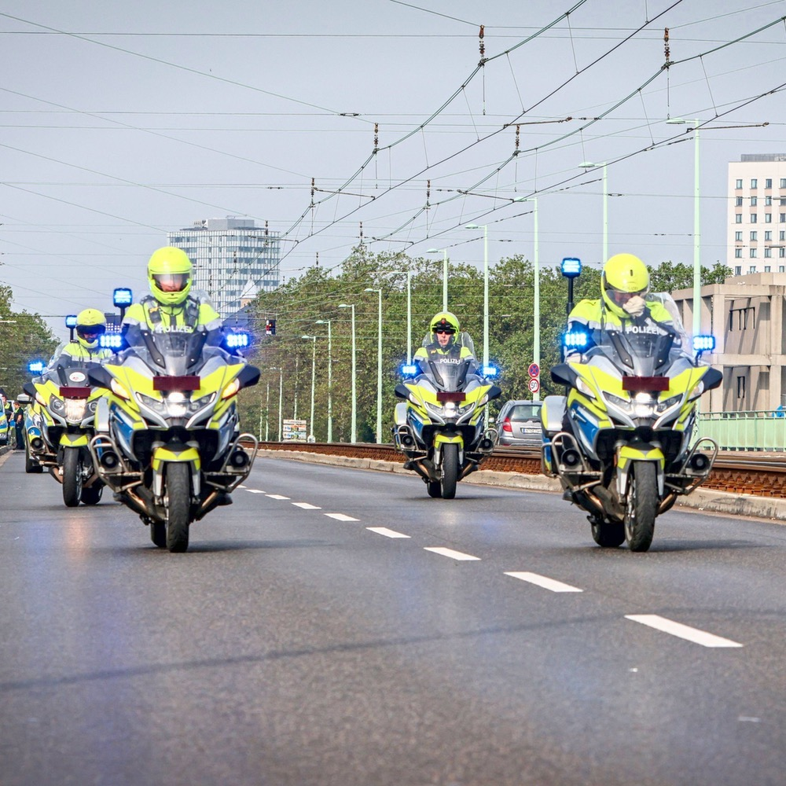
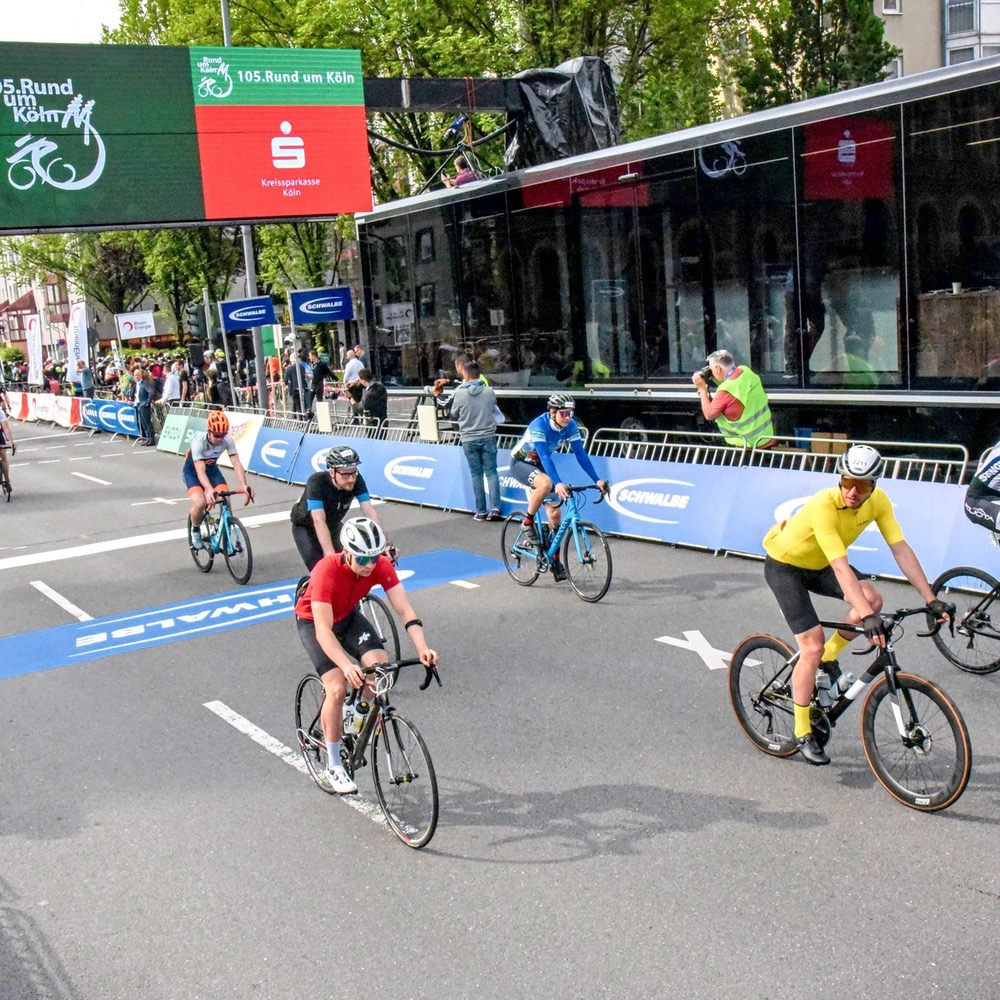
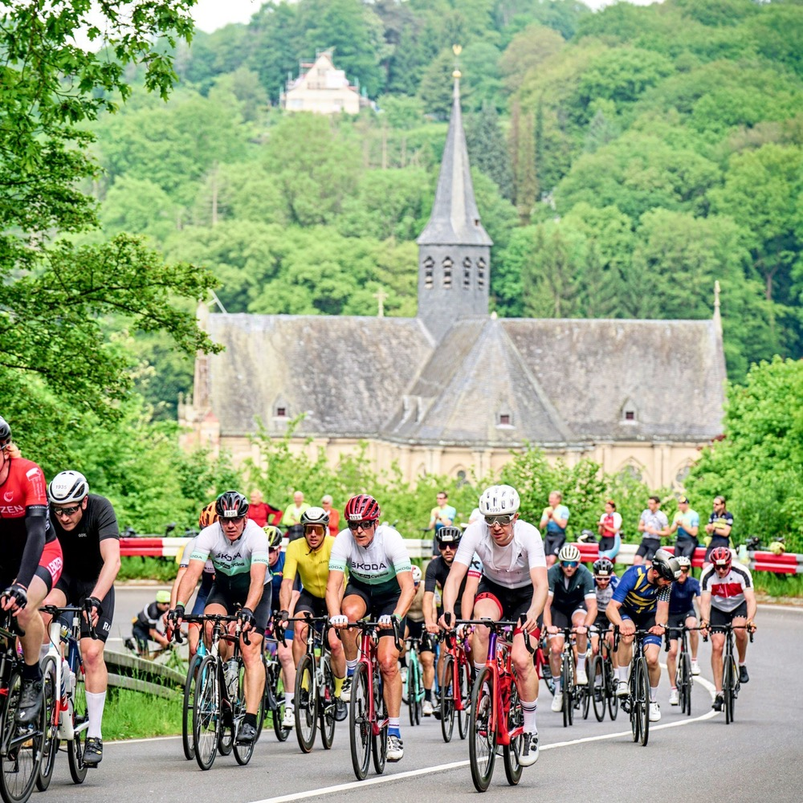
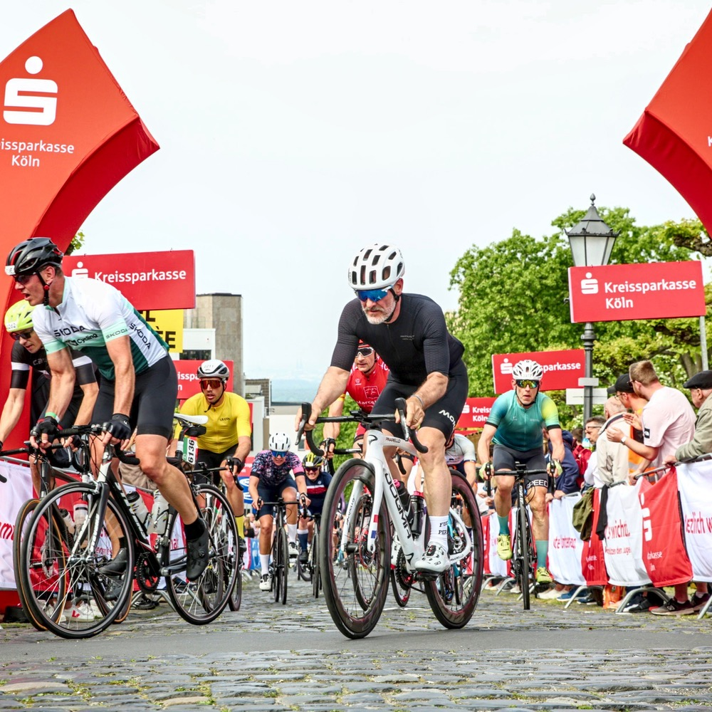
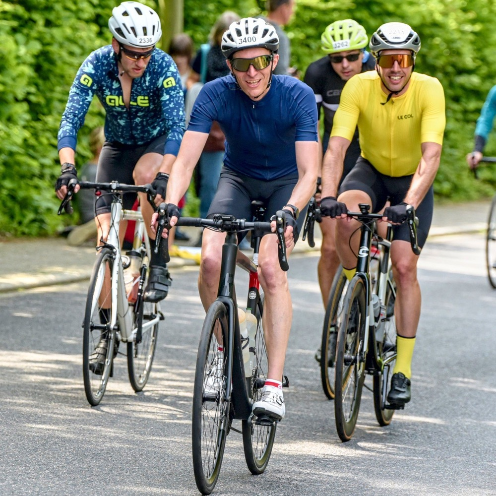
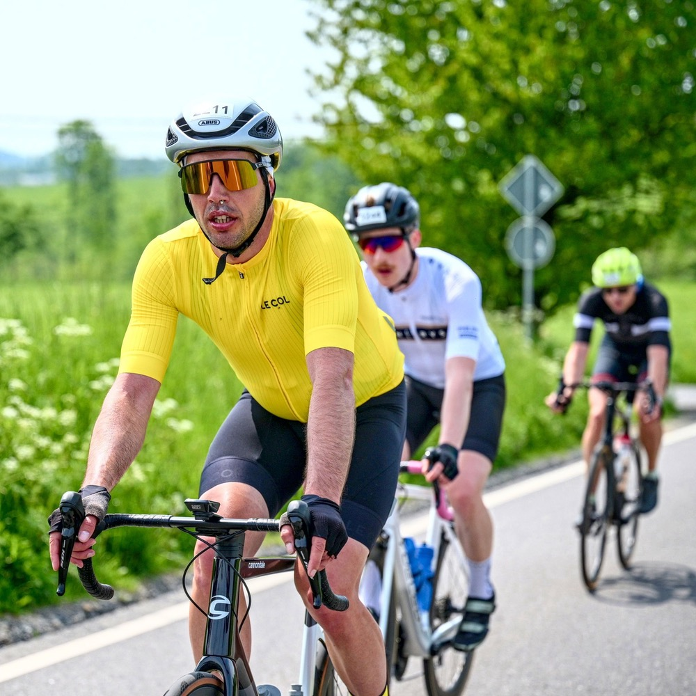
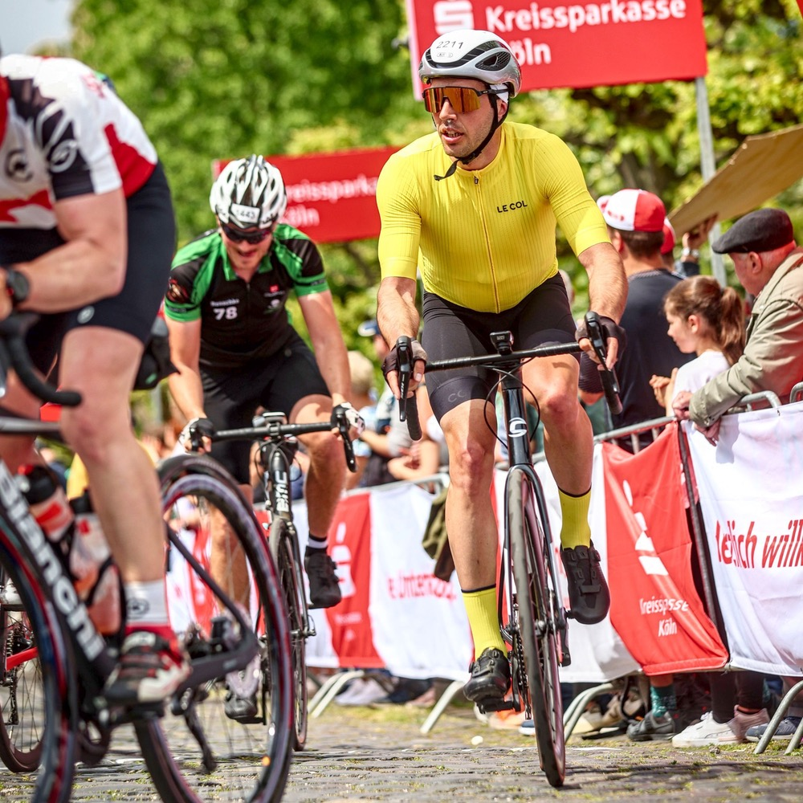
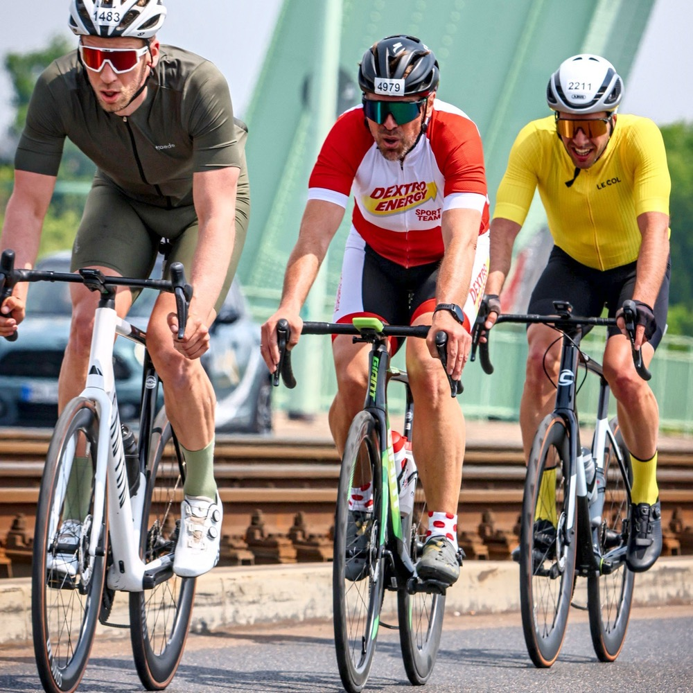
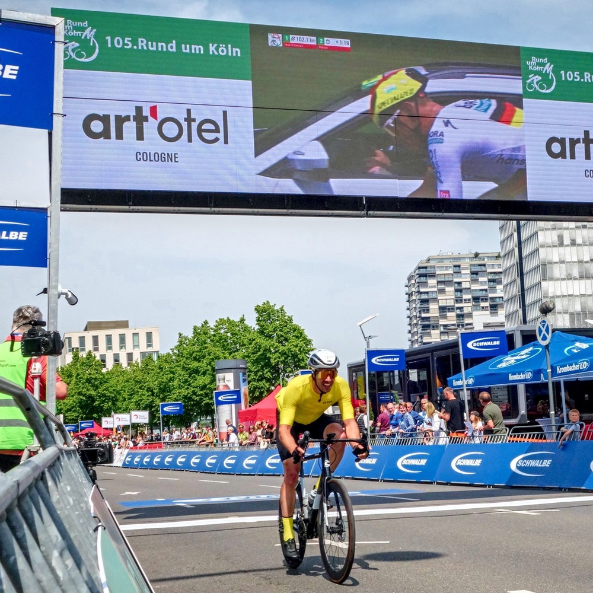

 Ein Härtetest einen Monat vor dem Marmotte, so war das geplant. Und tatsächlich haben wir Glück. Rund um Köln findet an den ersten richtig warmen Frühlingstagen statt. 130km und 1100 Höhenmeter stehen für heute auf dem Plan. Wir hatten uns schon im Herbst angemeldet. Wie wir in dern vierten (!) Startblock gerutscht sind wissen wir nicht mehr. Aber wir sind mal wieder mit der Dortmunder Gang unterwegs. Henning, Thorben, Tobi – und irgendwo weiter vorne Dominik. Um 9 Uhr geht es los, bei schönstem Wetter direkt am Rhein und auf gesperrten Straßen. Endlich mal wieder.
 Rund um Köln ist der älteste deutsche Klassiker, der heute noch gefahren wird. Die Route führt uns heute ins bergische Land. Aufgrund des hinteren Startblocks haben wir früh ziemlich freie Fahrt und rollen schnell mit einer kleinen Gruppe auf den ersten Anstieg zu. Die Straßen sind breit und gut gesichert und leider zeigt sich einmal mehr, dass gute Zusammenarbeit bei solchen Rennen nur schwer zu organisieren ist. Wer im Wind ist bleibt dort, bis er aufgibt. Organisiert schnell zu fahren ist fast unmöglich.
 Am ersten Hügel des Tages angekommen sind schon wieder ein paar Körner mehr als geplant verbrannt worden. Ich versuche den Anstieg an der Schwelle zu fahren. Die Fahrer aus meiner Gruppe ziehen an mir vorbei. Doch schon in der Hälfte des Anstiegs zeigt sich, dass Pacing heute der Schlüssel ist. Ich finde viele Fahrer aus meiner Gruppe wieder und arbeite mich kontinuierlich zu den vorderen Fahrern aus meinem Startblock vor. Bis zur Abfahrt habe ich ein nettes Grüppchen gefunden. Es geht in Richtung Schloss Bensberg.
 Die lokalen Tiefbauer haben noch einen Anschlag auf das Rennen verübt. An der ohnehin schon engen gepflasterten Auffahrt zum Schloss Bensberg ist eine Baustelle eingerichtet worden in der Baken wie Schikanen die Straße verengen. Mein Timing ist ungünstig. Ich fahre direkt in eine große Gruppe von Fahrern aus dem vor uns gestarteten Startblock hinein. In den steilen 150m Metern Kopfsteinpflaster habe ich Mühe nicht zu viel Tempo zu verlieren. Oben angekommen suchen wir uns die nächste Gruppe. Ein kurzes Flachstück steht an, bevor wir wieder bergauf müssen.
 Hinter Bensberg werden die Gruppen immer kleiner. Zum Einen aufgrund des insgesamt sehr welligen Geländes, zum Anderen aber sicher auch, weil die jeweils stärkeren Fahrer an den Anstiegen doch recht aktiv versuchen die Lutscher aus den Gruppen abzuhängen. Interessant ist immer, dass Menschen, die keine Lust haben ein kleines Bisschen Führungsarbeit zu machen in die funktionierenden Kreisel hineinfahren und diese unterbrechen. Von hier an wird der Tag einer Großen Zwift Gruppenfahrt ähnlich. Ausruhen, vorfahren, attackieren, die nächste Gruppe finden…
 Offensichtlich läuft das Rad mittlerweile ganz gut. Leicht irritiert sehe ich mich am Ende der längsten Abfahrt um und stelle fest, dass ich meine Gruppe rollend(!) um über 100m distanziert habe. Ich fahre weiter und finde immer wieder neue kleine Grüppchen, die ich ab hier aber eher ziehe, als dass ich mich im Windschatten ausruhen kann. Wir sind am entferntesten Punkt der Strecke und bewegen uns langsam wieder auf Bensberg zu. Mittlerweile sind auch die 70 km Fahrer auf der Strecke. Ich versuche für meine zweite Auffahrt am Schloss eine Lücke zu treffen. Und scheitere.
 Wahrscheinlich war es einfach den ganzen Tag voll am Anstieg zum Schloss. Auf jeden Fall finde ich mich einmal mehr in einer dichten Traube aus Radlerinnen und Radlern wieder und habe Mühe bei Schrittgeschwindigkeit auf dem Rad zu bleiben. Bei der zweiten Auffahrt haben sich die Zuschauerbereiche sichtlich gefüllt. Die Profis sind auf dem Weg und werden hinter uns, sicher in anderem Tempo das Schloss passieren. In der anschließenden Abfahrt fahre ich an vielen Gruppen vorbei. Schließlich finde ich eine große Truppe 70km Fahrer. nach und nach fahre ich vor und will mitarbeiten, die Beine sind gut heute. Aus dem Mitarbeiten wird aber nix. Einmal vorne, lässt man mich dort verhungern. Ein einsamer Mitstreiter macht mit mir Führungsarbeit. wir fahren fast 20km vorne, die letzten fünf locker nebeneinander. Ein kleines Bisschen ärgere ich mich schon und in meinem Kopf reift ein Plan.
 Eins habe ich in Münster gelernt, wenn auf den letzten Kilometern alle nach vorne drücken, obwohl sie vorher den ganzen Tag nur gelutscht haben, um im Sprint um Platz 427 unter die besten fünf zu kommen, dann möchte ich nicht in der Nähe sein. Und im gegensatz zum Westfälischen Pendant steht heute noch eine Rheinquerung mit einer schicken Rampe an.
Dass ich nach diesem Tag, den ich weitgehend am Limit bestritten habe nochmal vierstellig Punkten kann, hat mich im Nachhinein überrascht. Meine Gruppe wohl auch. Nach 30 Sekunden im tiefroten Bereich sehe ich mich kurz um. Mein Mitstreiter und ein weiterer Fahrer sind mitgekommen, der Rest der Gruppe ist 100m hinter uns. Ich sehe kurz zu den beiden hinüber. Das kurze Nicken bestätigt, wir bringen das gemeinsam zu Ende. Zum ersten Mal heute funktionieren die Führungswechsel. Nach zwei engen Kurven kommen wir auf die gut 300m lange und leere Zielgerade. Ich gehe, ein Bisschen zu spät, aus dem Sattel. Aber was solls. Wir sprinten noch ein letztes Mal heute und freuen uns über einen gelungenen Abschluss des Rennens. Es ist heiß geworden in Köln.
Rund um Köln ist ein Schönwetterrennen. Das Tempo ist hoch und in dichteren Bereichen des Feldes gibt es sicherlich die eine oder andere gefährliche Situation. Bei Regen und nasser Strecke möchte ich ehrlich gesagt die Abfahrten nicht mit Risiko bestreiten. Zu viele Kurven sind dann doch eher technisch und die Straßen nicht überall im besten Zustand.
Eine besondere Erwähnung muss aber noch der Zielbereich finden. Unglaublich gut organisiert, einladend zum kurzen Verweilen und kostenlose Snacks und Getränke in ausreichender Menge. Da können sich die deutlich teureren Veranstaltungen in Belgien ein Beispiel nehmen.